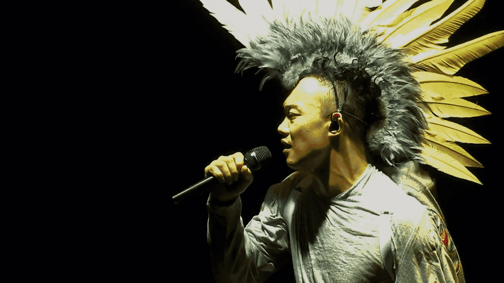

人物简介
陈奕迅（英语：Eason Chan Yick-shun，1974年7月27日－），香港男歌手及演员，曾担任第八至第十届香港演艺人协会副会长；亦曾获美国《时代杂志》形容为影响香港乐坛风格的人物。
陈奕迅亦演出超过四十部电影，曾多次获提名最佳男主角和最佳男配角。
重要事件
- 2005年，推出的专辑《U87》被《时代杂志》评为2005年亚洲五张最值得购买的专辑，而国语专辑《Special Thanks To...》(2002年)和《不想放手》(2008年)曾获得台湾金曲奖“最佳国语专辑奖”。他是第一个在台湾金曲奖上分别获得“最佳国语男歌手奖 (金曲奖)”和“最佳国语专辑奖 (金曲奖)”的香港歌手。
- 2018年凭国语专辑《C'mon In~》拿下29届金曲奖“最佳国语男歌手奖 (金曲奖)”及“年度专辑奖 (金曲奖)”，
- 2019年凭《L.O.V.E.》入围金曲奖第30届年度专辑奖，也是唯一的粤语专辑。他过往曾多次举办世界巡回演唱会，
- 2012年4月于O2体育馆举办《DUO 陈奕迅2012演唱会》伦敦站，成为首位站上O2 Arena的华人歌手，门票在开卖20分钟内售罄，成为O2 Arena售票速度最快纪录的第二名，仅落后于米高·积逊。
- 2009年，在“美涛·领衔2009腾讯网星光大典”中凭电影《金钱帝国》获得港台年度电影男演员荣誉。
主要成就
- 5 次获得“四台联颁 - 传媒大奖”（2000-02、2005、2007）
- 7 次夺得“至尊歌曲大奖”（2000、2005、2009、2012、2013、2015、2016）
- 10 次夺得“叱咤男歌手金奖”（2001-02、2005-07、2009-13）
- 9 次兼连续 9 年无间断获得“我最喜爱的男歌手”（2005-13）
- 2 次夺得“最受欢迎男歌星”（2006-07）及“亚太区最爱欢迎男歌星”（2007-08）
- 2 次夺得“劲歌金曲金奖”（2001-02）
- 9 次夺得“至尊唱片大奖”（1998-99、2001-02、2005、2007、2009-10、2013）
- 10 次夺得“全球华人至尊金曲”（2001-02、2005、2007、2009-10、2012-13、2016-17）
- 5 次夺得“我最喜爱的歌曲奖”（1999、2000、2005、2010、2013）
- 13 次兼连续 13 年无间断获得“最优秀流行男歌手”（2005-17）
- 10 次夺得“全年最高销量男歌手”（2002-03、2007-13、2015）
- 16 次夺得“叱咤男歌手奖”（1999-2003、2005-15）
- 18 次夺得“叱咤十大”（1998-2003、2005-13、2015-16、2018）
- 17 次夺得“十大中文金曲奖”（1998-2003、2005-07、2009-13、2015-16、2018）
- 20 次获得“十大优秀流行歌手”（1999-2003、2005-19）
- 10 次夺得“十大劲歌金曲奖”（1998-2003、2005-08）
- 3次夺得“金曲奖最佳国语男歌手奖”（第14届、第26届、第29届）
- 3次夺得“金曲奖年度专辑奖”或“金曲奖最佳国语专辑奖”（第14届、第20届、第29届）
主要作品
| 序号 | 粤语 | 国语 | 英文 |
|---|---|---|---|
| 01 | 安守本分 | 一滴眼泪 | |
| 02 | K歌之王 | K歌之王 | |
| 03 | 低等动物 | 低等动物 | |
| 04 | Lonely Christmas | 圣诞结 | |
| 05 | Shall We Talk | Shall We Talk | |
| 06 | 大开眼戒 | 寂寞让你更快乐 | |
| 07 | New Order | Last Order | |
| 08 | 岁月如歌 | 兄妹 | |
| 09 | 明年今日 | 十年 | |
| 10 | 裙下之臣 | 烟味 | |
| 11 | 最后的嬉皮士 | 第一个雅皮士 | |
| 12 | 白玫瑰 | 红玫瑰 | |
| 13 | 黑择明 | 月黑风高 | |
| 14 | 富士山下 | 爱情转移 | |
| 15 | 不如不见 | 好久不见 | |
| 16 | 心深伤透 | 爱是一本书 | |
| 17 | 粤语残片 | 白色球鞋 | |
| 18 | 张氏情歌 | 哎呀咿呀 | |
| 19 | 神奇化妆师 | 看穿 | |
| 20 | 那些让你死去活来的女孩 | Muffin Man | |
| 21 | 完 | 梦想天空分外蓝 | |
| 22 | 陪你度过漫长岁月 | Sleep Alone | |
| 23 | 四季 | I Do |
生活照


生平
陈奕迅曾就读圣若瑟小学，中学时因为父亲陈裘大为高级公务员，自中学开始与哥哥陈泽迅获政府津贴到英国唐德塞中学读书，大学时期在金士顿大学修读建筑学及四年正统音乐课程。于其间考得英国皇家音乐学院八级声乐证书（八级为业余最高）。
1995年暑假期间回香港参加TVB及华星唱片合办的第14届新秀歌唱大赛，演唱张学友的歌曲《望月》，在多个环节均获得高评分，成为该届冠军，随即跟华星唱片公司签下歌星合约。